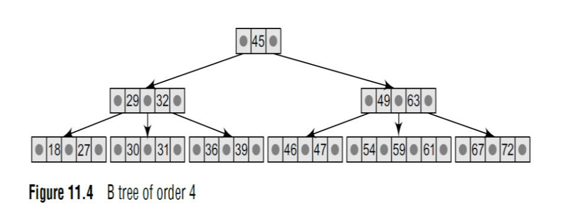

A B tree is a specialized M-way tree developed by Rudolf Bayer and Ed McCreight in 1970 that is widely used for disk access. A B tree of order m can have a maximum of m–1 keys and m pointers toits sub-trees. A B tree may contain a large number of key values and pointers to sub trees. Storing a large number of keys in a single node keeps the height of the tree relatively small. A B tree is designed to store sorted data and allows search, insertion, and deletion operations to be
performed in logarithmic amortized time. A B tree of order m (the maximum number of children that each node can have) is a tree with all the properties of an M-way search tree. In addition it has the following properties:
1. Every node in the B tree has at most (maximum) m children.
2. Every node in the B tree except the root node and leaf nodes has at least (minimum) m/2 children. This condition helps to keep the tree bushy so that the path from the root node to the leaf is very short, even in a tree that stores a lot of data.
3. The root node has at least two children if it is not a terminal (leaf) node. 4. All leaf nodes are at the same level.
An internal node in the B tree can have n number of children, where 0<=n<=m. It is not necessary that every node has the same number of children, but the only restriction is that the node should have at least m/2 children. As B tree of order 4 is given as

Operations on B-Tree:
•Inserting a New Element in a B Tree
In a B tree, all insertions are done at the leaf node level. A new value is inserted in the B tree using
the algorithm given below.In a B tree, all insertions are done at the leaf node level. A new value is inserted in the B tree using
the algorithm given below.
1. Search the B tree to find the leaf node where the new key value should be inserted.
2. If the leaf node is not full, that is, it contains less than m–1 key values, then insert the new
element in the node keeping the node’s elements ordered.
3. If the leaf node is full, that is, the leaf node already contains m–1 key values, then
(a) insert the new value in order into the existing set of keys,
(b) split the node at its median into two nodes (note that the split nodes are half full), and
(c) push the median element up to its parent’s node. If the parent’s node is already full, then split
the parent node by following the same steps.
Look at the B tree of order 5 given below and insert 8, 9, 39, and 4 into it
Till now, we have easily inserted 8 and 9 in the tree because the leaf nodes were not full. But
now, the node in which 39 should be inserted is already full as it contains four values. Here we
split the nodes to form two separate nodes. But before splitting, arrange the key values in order
(including the new value). The ordered set of values is given as 21, 27, 36, 39, and 42. The
median value is 36, so push 36 into its parent’s node and split the leaf nodes.
Now the node in which 4 should be inserted is already full as it contains four key values. Here we
split the nodes to form two separate nodes. But before splitting, we arrange the key values in order
(including the new value). The ordered set of values is given as 4, 7, 8, 9, and 11. The median
value is 8, so we push 8 into its arent’s node and split the leaf nodes. But again, we see that the
parent’s node is already full, so we split the parent node using the same procedure.
• Deleting a Element from B-Tree
There are two cases of deletion. In the first case, a leaf node has to be deleted. In the second case,
an internal node has to be deleted. Let us first see the steps involved in deleting a leaf node.
1. Locate the leaf node which has to be deleted.
2. If the leaf node contains more than the minimum number of key values (more than m/2
elements), then delete the value.
3. Else if the leaf node does not contain m/2 elements, then fill the node by taking an element either
from the left or from the right sibling.
(a) If the left sibling has more than the minimum number of key values, push its largest key into
its parent’s node and pull down the intervening element from the parent node to the leaf node
where the key is deleted.
(b) Else, if the right sibling has more than the minimum number of key values, push its smallest
key into its parent node and pull down the intervening element from the parent node to the leaf
node where the key is deleted.
4. Else, if both left and right siblings contain only the minimum number of elements, then create a
new leaf node by combining the two leaf nodes and the intervening element of the parent node
(ensuring that the number of elements does not exceed the maximum number of elements a node
can have, that is, m). If pulling the intervening element from the parent node leaves it with less
than the minimum number of keys in the node, then propagate the process upwards, thereby
reducing the height of the B tree. To delete an internal node, promote the successor or predecessor
of the key to be deleted to occupy the position of the deleted key. This predecessor or successor
will always be in the leaf node. So the processing will be done as if a value from the leaf node has
been deleted.
Consider the following B tree of order 5 and delete values 93, 201, 180, and 72 from it